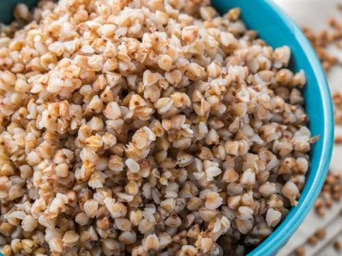

Buckwheat Kasha

Description
Buckwheat is a superfood that you really should incorporate into your meal plans. It is as versatile as rice, and I enjoy the flavor much more.
Ingredients
- 1 cup toasted* buckwheat groats
- 1 3/4 cups filtered water
- 1-2 tbsp butter
- 1/2 tsp salt
Be sure to look for toasted buckwheat. You may have to find this at a European store. If you cannot find toasted buckwheat, you can toast it in a dry skillet over medium heat for 4 minutes. You want the buckwheat to be golden brown.
Instructions
- Rinse and drain the buckwheat.
- In a medium saucepan, combine buckwheat groats with 1 3/4 cups of water, 1 tbsp of butter, and 1/2 tsp of salt.
- Bring to a simmer then cover with a lid and simmer on low for 16 minutes. Just like with rice, you should hear hissing while it's cooking and it will get quiet when it's done.
- Do not stir while the buckwheat is cooking.
- Stir in additional butter if desired.
- Bake for 3